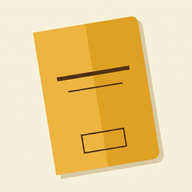
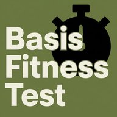
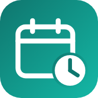
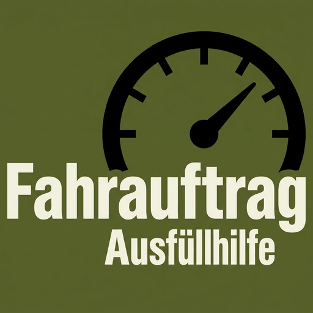
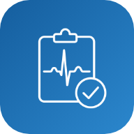

Aus dem Werk
Die Apps im Detail

Sportabzeichen-Rechner
Inoffizieller Trainingsbegleiter rund um das Deutsche Sportabzeichen
Sport
Google Play
Die App zeigt die Leistungsanforderungen nach
Altersklasse, berechnet die erreichte Stufe (Bronze, Silber, Gold) und hilft beim Ausfüllen
der offiziellen Prüfkarten.
- Leistungsanforderungen nach Altersklasse und Disziplin
- Automatische Auswertung Bronze / Silber / Gold
- Profile & Gruppen für Vereine und Prüfer:innen
- Ausfüllen der offiziellen DOSB-Prüfkarten als PDF
- Prüfkarten direkt aus der App drucken oder per Teilen-Dialog weitergeben
- Als native Android-App verfügbar – zusätzlich zur Web-Version
- Alle Eingaben bleiben lokal auf dem Gerät – kein Konto, kein Server
Privates, inoffizielles Projekt. Es besteht keine Verbindung zum Deutschen
Olympischen Sportbund (DOSB). „Deutsches Sportabzeichen“ ist eine Auszeichnung des
DOSB; die Bezeichnung wird hier ausschließlich beschreibend verwendet. Die offiziellen
PDF-Formulare sind kostenlos im DOSB-Materialcenter erhältlich und nicht Teil der App.

Impfbuch
Digitaler Impfpass im Stil des gelben Impfausweises
Gesundheit
Google Play
Ein digitaler Impfpass im Stil des gelben deutschen
Impfausweises. Die App berechnet aus dem Geburtsdatum automatisch, welche Impfungen fällig,
bald fällig oder abgeschlossen sind, kennt Kombinationsimpfungen und Reiseempfehlungen –
als persönliche Gedächtnisstütze, die vollständig auf dem Gerät läuft.
- Vollständiges STIKO-Impfschema (RKI): Grundimmunisierung, Auffrischungen,
Impfungen ab 60, Indikations-, Reise- und Berufsimpfungen
- Automatische Fälligkeitsberechnung mit Status „überfällig / bald fällig /
geplant / abgeschlossen“ inklusive Mindestabständen
- Kombinationsimpfungen (6-fach, Tdap-IPV, MMRV, Twinrix …) – ein Eintrag deckt
mehrere Impfungen ab
- Schnelleintrag für mehrere Impfungen und Daten auf einmal
- Familienprofile: mehrere Personen mit eigenen Impfdaten
- Reise- & Länderempfehlungen für alle Länder, mit Suche und Kontinent-Auswahl
- Gültigkeits-Überwachung für Reise- und Berufsimpfungen (z. B. Typhus)
- Erinnerungen an fällige Impfungen, Dark Mode, Export/Import als JSON
- Native Android-App und offline-fähige Web-App
- Alle Daten bleiben lokal auf dem Gerät – kein Konto, kein Server, kein Tracking
Die Impfbuch-App ist eine private Gedächtnisstütze. Sie ersetzt weder eine
ärztliche Beratung noch den amtlichen Impfausweis und trifft keine medizinischen
Entscheidungen. Verbindliche Auskünfte gibt ausschließlich ärztliches Fachpersonal.

BFT Tool
Punkterechner für den Basis-Fitness-Test
Bundeswehr
Google Play
Ergebnisse aus 11×10-m-Sprinttest, Klimmhang und
1000-m-Lauf (oder Fahrradergometer 3000 m) eingeben – die App berechnet daraus Punkte,
Gesamtergebnis und Note, inklusive Leistungszuschlag und Alterszuschlag.
- Teilnehmer-Modus: Leistungen eingeben, Punkte und Note live sehen, Verlauf lokal speichern
- Prüfermodus: mehrere Teilnehmer erfassen, Ergebnisliste mit bestanden / nicht bestanden
- Aufbau- und Durchführungsanleitung für alle drei Stationen
- Drucken sowie Export als PDF, Bild oder Text
- Helles Design mit Dark Mode, responsiv, komplett offline-fähig
- Native Android-App und Web-Version
- Alle Daten bleiben lokal auf dem Gerät – kein Konto, kein Server, kein Tracking
Inoffizielle App – privates Projekt, kein Angebot der Bundeswehr.
Alle Angaben ohne Gewähr; maßgeblich ist ausschließlich die offizielle Wertung.
Die kostenlose Version zeigt Werbung und erfasst bis zu fünf Teilnehmer. Die
Premium-Version (2,99 €) ist werbefrei, ohne Teilnehmerbegrenzung und schaltet den
Export als PDF, Bild und Text frei.
PFT Tool
Punkterechner für den Physical Fitness Test
Bundeswehr
Google Play
Pendellauf (4×9 m), Sit-ups (40 s), Standweitsprung, Liegestütz (40 s) und 12-Minuten-Lauf eingeben – die App berechnet die Punktwerte je Testaufgabe (0–6) und das Gesamtergebnis.
- Teilnehmer-Modus: Leistungen eingeben, Punkte live sehen, Verlauf lokal speichern
- Prüfermodus: mehrere Teilnehmer erfassen, Ergebnisliste mit bestanden / nicht bestanden
- Aufbau- und Durchführungsanleitung für alle fünf Stationen
- Drucken sowie Export als PDF, Bild oder Text
- Helles Design mit Dark Mode, responsiv, komplett offline-fähig
- Native Android-App und Web-Version
- Alle Daten bleiben lokal auf dem Gerät – kein Konto, kein Server, kein Tracking
Inoffizielle App – privates Projekt, kein Angebot der Bundeswehr. Alle Angaben ohne Gewähr; maßgeblich ist ausschließlich die offizielle Wertung.
Die kostenlose Version zeigt Werbung und begrenzt die Teilnehmerzahl. Die Premium-Version (2,99 €) ist werbefrei, ohne Begrenzung und schaltet den Export als PDF, Bild und Text frei.

SGT Rechner
Zeitrechner für das Soldaten-Grundfitness-Tool
Bundeswehr
Google Play
Die Zwischenzeiten der vier Aufgaben – Bewegen im Gelände, Ziehen, Tragen sowie Heben und Absetzen von Lasten – eingeben. Die App ermittelt daraus die Ampel-Kategorie Grün, Gelb oder Rot je Aufgabe und für den gesamten Durchlauf.
- Teilnehmer-Modus: Zeiten eingeben, Ampel-Kategorie live sehen, Verlauf lokal speichern
- Prüfermodus: mehrere Testpersonen erfassen, Ergebnisliste mit Kategorie
- Aufbau- und Ablaufanleitung für den Parcours inklusive Skizzen
- Drucken sowie Export als PDF, Bild oder Text
- Helles Design mit Dark Mode, responsiv, komplett offline-fähig
- Native Android-App und Web-Version
- Alle Daten bleiben lokal auf dem Gerät – kein Konto, kein Server, kein Tracking
Inoffizielle App – privates Projekt, kein Angebot der Bundeswehr. Alle Angaben ohne Gewähr; maßgeblich ist ausschließlich die offizielle Auswertung.
Die kostenlose Version zeigt Werbung und begrenzt die Personenzahl. Die Premium-Version (2,99 €) ist werbefrei, ohne Begrenzung und schaltet den Export als PDF, Bild und Text frei.

Never2Late
Ablaufdaten und Fristen im Blick
Organisation
Google Play
Never2Late verwaltet Ablaufdaten, Gültigkeiten und wiederkehrende Fristen: Ausweise, Karten, berufliche Nachweise, Fahrzeugtermine, Gesundheits- und Reisedokumente sowie Verträge zentral erfassen, rechtzeitig erinnert werden und sehen, was als Nächstes ansteht.
- Dashboard: Abgelaufenes und bald Fälliges sofort im Blick
- Acht mitgelieferte Kategorien plus eigene – ein Eintrag kann mehreren Kategorien angehören
- Statuslogik: Aktiv, Bald fällig, Abgelaufen, Archiviert
- Erinnerungen 3 Monate / 1 Woche / 1 Tag vorher, je Eintrag anpassbar
- Wiederkehrende Fristen jährlich, halbjährlich oder monatlich mit automatischer Folgeberechnung
- Erneuern und Archivieren, Suche, Status- und Kategorie-Filter, Kalender-Export (.ics)
- Native Android-App und Web-Version
- Alle Daten bleiben lokal auf dem Gerät – kein Konto, kein Server, keine Cloud, kein Tracking
Die aktuelle Version enthält weder Werbung noch Käufe. Erinnerungen sind lokale Benachrichtigungen des Geräts; für fristgebundene Vorgänge bleibt die eigene Kontrolle maßgeblich.

Fahrauftrag Ausfüllhilfe
Eintraghilfe für die Kilometerfelder im Fahrauftrag
Bundeswehr
Google Play
Im Kilometerfeld steht die Rückkehr oben und die
Abfahrt darunter – andersherum als die Fahrt abläuft. Die App zeigt beide Zahlen an der Stelle,
an der sie auf dem Blatt stehen, dazu die gefahrene Strecke und das Kästchenraster.
- Abfahrt- und Rückkehr-km eingeben, gefahrene Kilometer sofort ablesen
- Kästchenraster mit sechs Feldern je Zeile, rechtsbündig wie auf dem Vordruck – führende Kästchen bleiben leer
- Umschalter Kilometer / Betriebsstunden
- Klare Meldung, wenn Abfahrt und Rückkehr vertauscht sind; Prüfhinweise bei 0 km und großen Differenzen
- Uhrzeiten zuschaltbar: Fahrzeit inklusive Fahrten über Mitternacht, Hinweise zu Lenk- und Ruhezeiten
- Fahrten nachtragen: Kette der Kilometerstände aus Einzelstrecken aufbauen
- Vier Designs, darunter „Klassisch“ – Schwarz auf Papierweiß in der Optik des Vordrucks
- Komplett offline, alle Daten bleiben lokal auf dem Gerät
Inoffizielle App – privates Projekt, kein Angebot der Bundeswehr. Kein
Formular und kein Ersatz für den amtlichen Vordruck; eingetragen wird weiterhin von Hand.
Alle Angaben ohne Gewähr.

CPR Assist
Reanimation strukturieren und protokollieren
Medizin
Werbefrei
Kognitive Unterstützung für die Reanimation Erwachsener nach ERC/ALS oder AHA/ACLS: Zwei-Minuten-Zyklen, Medikamenten-Status, reversible Ursachen, Post-ROSC – und ein Protokoll, das jeden Schritt mit Zeitstempel festhält.
- Zyklustimer mit Analysefenster und zuschaltbarem Metronom (100/110/120)
- Adrenalin-Status statt roher Zahl; Amiodaron bzw. Lidocain als Dosisstatus
- Reversible Ursachen mit drei Zuständen und Kurznotiz, Post-ROSC-Modus
- Zwischen ERC/ALS und AHA/ACLS umschaltbar – kostenfrei
- Einsatzbericht als PDF oder PNG, auf dem Gerät erzeugt
- Sechs Sprachen, Bildschirm bleibt im Einsatz an
- Werbefrei – auch später; alle Daten bleiben lokal
Kognitive Unterstützung, kein Medizinprodukt. Die App trifft keine Therapieentscheidungen und ersetzt weder Ausbildung noch klinisches Urteil; verantwortlich bleibt das behandelnde Team. Angaben ohne Gewähr.

SkillLog Med
Digitales Logbuch für klinische Maßnahmen
Medizin
Google Play · Geschlossener Test
Dokumentiert, wie oft eine Maßnahme durchgeführt wurde – mit Kompetenzstufe, Setting, Ort und Tags – und erzeugt daraus druckbare Berichte für Praktikum, Ausbildung und Portfolio.
- Eintrag in 10–20 Sekunden: Stufe, Setting, Ort, Tags; Favoriten und „Speichern + Neu“
- 20 Standardmaßnahmen mit Piktogrammen, frei erweiterbar, acht Kategorien
- Dashboard, Logbuch mit Volltextsuche und Filtern, Statistik je Zeitraum
- PDF-Bericht mit Unterschriftsblock für die Praxisanleitung, CSV-Export
- JSON-Backup mit allen Stammdaten, Profil erscheint im Bericht
- Keine Patientendaten – dokumentiert wird ausschließlich die eigene Tätigkeit
- Werbefrei und ohne Käufe; alle Daten bleiben lokal
- Android-App im geschlossenen Test, Web-Version frei zugänglich
SkillLog Med ist keine Patientenakte und fragt an keiner Stelle nach Patientendaten. Dokumentiert wird ausschließlich die eigene Tätigkeit.